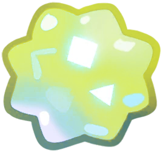

Leo

Months of the year: Jul and Aug
————⋆✦⋆————
You have found an Leo star fragment! It's a soft lime green, sparkles and moves happily! Leo is a prominent constellation located in the Northern Hemisphere, between the constellations of Cancer and Virgo. It is one of the 12 constellations of the zodiac. Leo is located near the celestial equator, making it visible in both the Northern and Southern Hemispheres. If you're in the Northern Hemisphere, Leo will be visible during spring and summer, while in the Southern Hemisphere it will be visible during fall.
In Egyptian culture, Leo was associated with the god Ra, the god of the sun, and the constellation represented the rising sun. This reinforced Leo's connection to royalty and divine power. Leo is easily visible in the sky during the spring and summer months, especially between March and June. Regulus, Leo's brightest star, is easy to identify and is located close to the zodiac, making the constellation quite prominent.
You can hear a couple of playful laughs coming from this star! You can hear its happiness, it's like the fragment is thanking you for finding it.
————⋆✦⋆————
The little sun
Once upon a time, there was a very special little boy who lived at the center of the universe. Inside his chest beat a heart that shone like a magic lantern, warm and welcoming like a hug from mom in the morning. Every day, he would put on his special shiny apron and sit at his little work table. There he had everything he needed: star dust, rays of light, and lots of love to make new suns. With his small but very skilled hands, he would knead the suns like balls of shiny dough.
He would give each sun a special touch: some he would add more shine, others he would give a more golden color, and he would give them all a hug before finishing. When he finished a new sun, he would gently throw it into space, and the planets would spin with joy as they arrived. The boy never got tired of making suns, because he knew that each one was special and would bring light and warmth to different parts of the universe. Their suns made space flowers bloom and even the grumpiest comets smile.